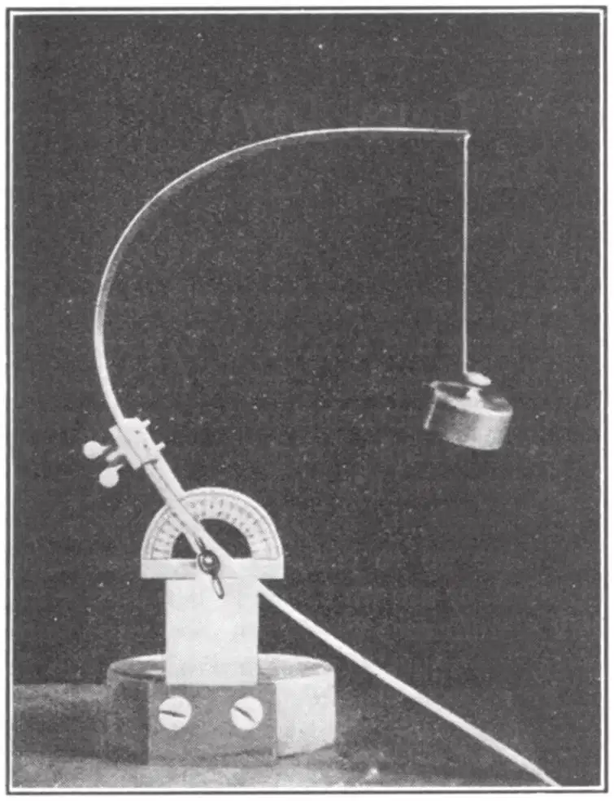
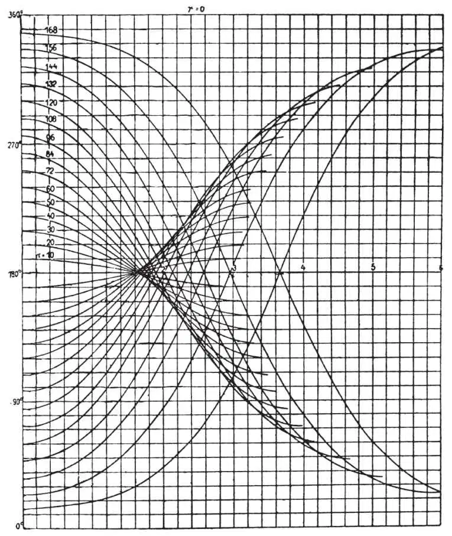

英文
英文玻恩
编者按
20世纪20年代，在哥廷根大学工作的马克斯·玻恩已经是量子力学的奠基人之一了。后来，德国政府关于犹太人不能再在德国大学任教的决定使他不得不离开德国；在剑桥短暂停留后，他最终定居爱丁堡，并和其家人在那里住了几十年。玻恩是一位思路极为清晰的讲演者，这篇关于物理定律的讲演就是其中的一个典范。 英文
我并不是要表明自己是一名古典主义学者，不过我认为有关这里我要研究的问题的最早记录恐怕要追溯到维吉尔的《埃涅阿斯纪》，即第一册第369行所写的“用公牛皮围一块尽可能大的地”。 英文
当狄多来到迦太基古城时，她与当地的土著人谈判，用一定量的金币换取一头公牛的牛皮能够围起来的土地。这个精明的女人把公牛皮割成细长条并将它们首尾相连，最终圈得一片相当大的土地，这就是她王国的核心。为了做到这点，显然她得解决这样一个数学问题——著名的“狄多问题”：如何使给定周长的闭合曲线所围成的面积达到最大。我们并不知道她是如何解决这个问题的，可能用试验或推理，也可能是靠直觉。无论如何，我们不难猜到这个问题的正确答案是：一个圆。但直到现代数学方法的出现才最终从数学方面给出了证明。 英文
上面提到的内容是第一次在文字记载出现这类问题的相关记录，当然我不是指在此记录之前的人类历史中从未出现过这类求极小值和极大值的问题。实际上，每次应用推理达到某个明确实际的目标时，我们都或多或少在试图解决这样的问题：在一定的努力的基础上得到最大的效果，换句话说，即以最小的代价得到预期的效果。从以上对同一个问题的两种表述方式中我们看到，求极大值与极小值的问题之间并没有本质的区别；我们可以简单地称之为“极值”或“极值函数”问题。 英文
在17世纪末的艾萨克·牛顿时代，极值函数的几何问题和力学问题开始引起数学家们的兴趣，在牛顿去世（1727年）后不久，自然界的意义或经济性等形而上学的思想逐渐与这些极值问题联系起来了。 英文
最简单的一个例子是光学中的“反射定律”，这个定律可以表述成极小原理：从某一点P1传播到另一点P2的光束所选择的反射点Q要满足总路程P1Q + QP2为最短。光的行为性质表现为每束光都具有缩短路程的趋势，法国哲学家费马已经指出，几何光学的所有规律都可以归纳为这一原理。光的运动就像一个疲劳的信使，他会在到达确定的目的地之前谨慎地选择尽可能最短的路程。我们如何理解以上的解释呢？认为这是一种偶然的情况，还是我们可以从中发现更深刻的形而上学方面的意义？在我们做出判断之前，我们必须了解更多的事实，并考虑其他更多的情况。 英文
空间中两点之间最短的连线是直线。但如果我们在地球上运动时，我们永远不能精确地沿直线行进，这是因为地球的表面不是平面。而最好的选择是沿着大圆的路径，这个大圆是大圆所在的球与某一穿过球心的平面相交的曲线。然而地球并不是一个精确的球体，它的两极稍微有些扁平、赤道略微凸起。那么在这样的球面上，最短的路线是什么样子的呢？ 英文
高斯利用大地三角测量方法对他所在的德国汉诺威选区进行测绘时也碰到了这个问题。他从最普遍的观点出发来处理问题，并研究了任意表面上最短的线。为了纪念他处理这个问题的出发点，他仍将这些最短的线称为“测地线”。对于物理学来说，“测地线”在许多方面都具有重要意义。 英文
我们考虑球体表面上的一点P，且通过P的所有曲线在P处方向相同。显然，在它们之中有一条“最直的曲线”，即曲率最小的曲线。因此，测地线可以用两种稍微不同的最小性原理来表征：第一种可被称为“局部的”或“微分的”性质，即经过某个定点并给定方向的曲线，其曲率最小；第二种被称为“整体的”或“积分的”性质，即表面上的两点之间路程最短。 英文
“局部的”和“整体的”定律之间的二元论不仅出现在这类简单的几何问题中，而且在物理学中有着更加广泛的应用。它在早期争论物理学的基础时就已经出现，即力的作用是直接的超距作用（如牛顿引力理论和电磁理论早期形式中的假设），还是只能是点到点的作用（如法拉第和麦克斯韦的电磁学理论及所有的现代场论）。 英文
人们对局部形式的极值定律似乎并无反对意见；但以我们现在的思维来说，我们还是不太能自然地接受总体形式的极值定律：虽然我们知道粒子将在给定的瞬间沿直线行进，但是我们并不明白它是如何迅速地对到达远处某个地方所有可能的路线进行对比并从中选择最短的一条的——这些听起来似乎都很形而上学。 英文
但我们在探究以上想法之前，我们自己必须深信，在物理学的所有方面都存在最小性原理，它们不仅是正确的，而且是物理定律中很有用且具有启发性的公式。 英文
毫无疑问，静力学，即各类系统在力的作用下最终都将处于平衡态的学说，成功应用了极小原理。重心趋向于处在尽量低的位置；为了得到稳定的平衡态结构，我们只能去寻求重心高度的极小值。重力乘以这个高度将得到所谓的势能。 英文
两端悬挂的一条链将呈现出确定的形状，这个形状是在重心高度取极小值的条件下得到的。如果这条链有很多链环，我们将得到被称为悬链线的曲线形状。这很容易通过一条重的链条表示出来，它的重心是用光杠杆的测量方法进行标记的，用任何方式对链条的平衡位置进行扰动都会导致链条重心的上升。 英文

图1 英文
图1描述了一个重力与另一种力即弹力相互竞争的例子。一根钢尺一端被夹紧固定住，另一端悬挂着一个砝码。这个砝码被重力往下拉，而钢尺由于具有弹性而抵制弯曲。因为必须做一定量的功才能使钢尺弯曲成一定形状的弧线，所以弹力也有相应的势能。事实上有一些确定的平衡位置，其总的能量即引力和弹力相应的势能之和取最小值。通常存在两个这样的平衡位置。慢慢地改变钢尺被夹的角度，我们可以找到这样一个位置，该位置上的钢尺可能突然朝反方向弯曲成相反的形状。这种不稳定性是由能量极小值的条件所决定的。我们总结了与稳定性极限相关的事实并用图形（图2）表示出来，图2所画的并不是弹性曲线本身，而是倾斜角与自由端到固定点距离两者的关系曲线。我们得到了波形曲线，这些曲线都是一端挂着砝码的曲线沿水平方向的变化曲线。这些曲线具有一个包络面，它把通过同一个点的一条或几条曲线与其他曲线分隔开来，相关的计算表明，包络面就是稳定性的极限条件。后面讨论到动力学的极小原理时我们将回来继续研究这个例子。 英文

图2 英文
另一个证明极小能量静态原理的例子是肥皂泡。肥皂泡具有尽可能收缩变小的性质；其势能与表面面积成正比。因此，肥皂泡具有最小范围的表面，或者说极小的表面。自然界是一位专业的数学家，它很快就找到了这个问题的解决办法。 英文
这些实验并不是不能应用于实际的玩具模型。选择它们只是为了便于说明。我们绝对没有夸大极小能量原理的实际重要性。它是所有工程建筑的基础，也是物理学和化学中所有结构问题的基础。 英文
晶格模型提供了这类例子。晶体是确定种类的原子在空间中规则排列形成的。由两种化学性质类似的化合物即普通的盐（NaCl）和氯化铯（CsCl）各自组成的晶格的模型在结构上是不同的。为什么二者会存在这样的差别呢？因为铯原子的尺寸远大于钠原子，所以两种情况下的势能不一样，而势能取极小值时对应的原子构型也不一样。 英文
以上这类问题的考虑或多或少能从定量的角度帮助我们了解很多固体物质内部结构的情况。 英文
由于动力学中的极小原理并不像静力学中的那样清楚和令人满意，因此，在开始考虑动力学的极小原理之前，我们有必要先提到物理学的另一部分，它在某种意义上来说是介于静力学和动力学之间的。这就是热学、热力学和统计力学的理论。 英文
开尔文勋爵发现了控制不可逆过程的很重要的极值原理：被称为“熵”的物理量在不可逆过程中是不断增大的，并在最终的平衡态下达到最大值。很难用直接的可观测量，如体积、压力、温度、浓度和热量等来描述这个不可思议的熵。但是我们可以很容易地从原子理论的角度得到熵的物理意义。以下这个模型将帮助我进一步解释熵的意义。取一个如同台球桌那样扁平的可放入弹球的盒子。如果我们小心地把这些弹球摆在盒子的右半部分，这时得到的状态是部分有序；如果我们摇动盒子使这些弹球分布在整个盒子的范围内，得到的是一个更低序的状态。如果我将这些弹球一个接一个地扔进盒子里，则每个弹球的位置都是随机的，就不太可能出现所有的弹球都落到右半部分的情况了。我们可以很容易地计算出弹球在整个盒子内均匀分布的概率，并把这个概率与大部分弹球都位于右半部分的概率进行比较；人们发现均匀分布的情况存在压倒性的优势。热学的统计理论借助原子的分布概率解释了系统中的熵，而我们可以由越无序的状态出现的概率越大这个明显的事实来解释熵增加的趋势。 英文
现在我们回来继续讨论动力学极小原理。 英文
17世纪末巴塞尔的约翰·伯努利阐述了我们要讨论的这类问题中的一个，这个问题不仅在历史顺序上是最早出现的，在这类问题中也是最简单的，伯努利家族是一个大家族，并且产生了许多著名的学者，尤其是数学家。这是一个关于最快速下降曲线或者说捷线的问题：给定两个不同水平高度上的点，它们不在同一竖直线上，为了确定这样一条曲线，使物体在重力作用下从较高点沿着该曲线无摩擦地滑到较低点的过程中时间最短，我们当然要对通过这两点的所有可能曲线进行比较。使用一个具有三条路径的模型，三条路径分别为直线、圆的一段弧线和被称为摆线的中间曲线，可以看到，最先到达较低点的并不是沿着直线滚动的小球，也不是沿着圆弧的陡峭弧度滚动的小球，而是沿着摆线滚动的小球。如果你尝试其他任何曲线，你将会发现结果总是一样的，因为摆线就是按照理论计算所得出的时间最短的轨迹。 英文
确定摆线的捷线过程在数学处理方面是完美、无可挑剔的。这类极值问题受到了广泛的关注，在那个时期，没有一个哲学家不是通过解决类似的极值问题来检验自己的分析结果的。18世纪初，伯努利家族的另一个成员丹尼尔·伯努利发展了静力学的极小原理，并成功地把该原理应用到悬链线和弹性线的情况中。在以上这些成就的鼓舞下，他提出这样一个问题：通过真实运动情况的极小性质（与其他所有想象的或可能实现的运动情况相比较），是否可以描述出给定作用力情况下物体的运动轨迹，甚至是轨迹中物体的运动情况呢？例如描述一颗行星的运动情况。他向当时最有名的数学家伦纳德·欧拉提出了这个问题，欧拉对此很感兴趣并于1743年的秋天给出了这个问题的答案，之后，他在1744年出版的书中借助各类例子对此作了进一步的解释。这就是迄今为止在物理学中一直扮演着重要角色的最小作用量原理的基础。 英文
与这个最小作用量原理有关的是一段充满混乱的不可思议的历史，其中出现了发现原理的优先权之争和其他不愉快的事件。同样是在1744年，莫佩尔蒂向巴黎科学院提交了一篇论文，文中他把我们前面已经讨论过的费马提出的最小光程的光学原理替换成一个他自己主观的假设，并于1746年把他的假设推广到所有的运动情况中。他并没有对他的原理给出满意的证明（这并不奇怪，因为他的原理本身就是不正确的），而是在自然经济性的基础上以形而上学的论据进行论证。他受到了巴黎的达西爵士、伯尔尼的塞缪尔·柯尼希和其他人的猛烈攻击，他们指出，如果莫佩尔蒂的主张是正确的话，那么一向经济节俭的自然在某些情况下将被迫做最大的而不是最小的功！欧拉提出的原理是正确的，但他的行为颇为奇怪；他非但没有声明自己发现该原理的优先权，反而对莫佩尔蒂的原理表示赞赏，并宣称这个原理是更普遍的。我们很难找到欧拉持这种态度的原因。其中的一个原因似乎是由于柯尼希公开了所谓的莱布尼茨信件的一部分，该部分对最小作用量原理也进行了阐述。这封信的真实性从未得到证实，似乎很有可能是伪造的，目的是用来削弱莫佩尔蒂的地位。这也许是使欧拉站在莫佩尔蒂这一边的原因，当时的莫佩尔蒂是柏林学院的院长并且特别受当时的国王弗雷德里克二世，也就是后来所谓的弗雷德里克大帝的喜爱。这场关于最小作用量原理的争辩不但在无忧宫的范围内展开了，后来甚至进入了政界的活动舞台。弗雷德里克的朋友伏尔泰非常讨厌傲慢的柏林学院院长莫佩尔蒂，因此，他站到了“受压迫者”柯尼希的一边，并写了《阿卡基亚博士》这本小册子来讽刺莫佩尔蒂。虽然弗雷德里克非常欣赏伏尔泰机智的讽刺风格，但是为了不让自己尊贵的院长的利益受到损害，他不得不替莫佩尔蒂辩护。这最终导致了弗雷德里克和伏尔泰的友谊破灭，随后伏尔泰逃离柏林，这些在许多关于弗雷德里克或伏尔泰的传记中都有所描述。 英文
如同受到了诅咒一样，人们在最小作用量原理上困惑了很长时间。拉格朗日的工作把牛顿力学发展到了极致，但是他给出的最小作用量原理的形式并不令人满意。雅可比给拉格朗日的形式加上了限制条件使得极小值条件可以给出物体正确的运动轨迹；但必须知道能量方程才能得到轨迹中具体的运动情况。这是极小原理发展历史上很重要的一步。最终，对这个原理的诅咒被伟大的爱尔兰人威廉·罗恩·哈密顿爵士打破了，他所表述的该原理在数学上是完全正确、简单且普适的。同时，他也结束了用自然的经济性来解释该原理的时代。由于幸运的数学巧合，势能的静态极小原理这个静力学问题与摆的哈密顿最小作用量原理在形式上完全符合；先前我们讨论的一端悬挂砝码的钢尺就是这种静力学情况之一。钢尺弯曲的倾斜角是其自由端到固定点距离的函数，而摆的偏转角是时间的函数，但是表示钢尺倾斜角的曲线与表示摆偏转角的曲线却是严格一致的（见图2）。 英文
现在我们已经看到，图中只有那些被曲线简单覆盖的区域对应于实际的极小值范围，即对应弹性尺形变的稳定构型。而包络面以外的其他区域中存在两条或多条曲线穿过同一个给定点的情况。其中只有一条对应实际的极小值。以上两种对应实际极小值的情况都是摆可能的运动情况。虽然弹性钢尺端点的限制条件与哈密顿原理中每个时间间隔内端点的限制条件并不严格一致，但是在以下情况中它们有一样的规律：如果钢尺的长度或相应于哈密顿原理中钟摆模型的时间间隔超过一定的极限，将不止有一种可能的解存在，虽然这些解都对应于可能的运动情况，但并不是每一个解都存在真正的极小值与之对应。在这种情况下，我们得到的结论是：实际的运动情况是否存在并不总是以真正的作用量的极值性质作为判断依据的，而是以相对不明显的数学性质即所谓的“稳态”构型作为判断依据的。 英文
因此从自然的经济性解释极小原理失败了。我们认为这种在自然规律中寻找目的和经济性的想法是一种可笑的拟人论的想法，它是形而上学的思维主导科学的时代留下的残余。 英文
总而言之，哈密顿的极小原理的重要性体现在完全不同的方面。具有经济性的并不是自然而是科学。我们所有的知识都是从收集到的事实经验出发的；但我们进一步要做的是把这些无数的事实经验总结发展成为简单的规律，并把这些简单规律再次总结发展成为更加普适的规律。在物理学中这个过程是显而易见的。我们可以回想一下，例如在麦克斯韦关于光的电磁理论中，光学变成了广义电动力学的一个分支。在达到理论大统一的过程中，极小原理是一个强有力的手段。最理想的情况是把所有的规律浓缩成一个规律，一个普适的公式，而早在一个多世纪之前，法国伟大的天文学家拉普拉斯就已经提出过这种猜想了。 英文
如果按照维也纳哲学家恩斯特·马赫的观点，则我们应该把是否具有经济性作为判断科学是否合理的唯一条件。我并不赞同这种观点——我认为还有其他判断科学合理性的方面和办法。这里我并不是认为思维的经济性和对结果的归纳不重要，而且我也认为拉普拉斯提到的普适的公式是一种合理的想法。毫无疑问，哈密顿原理是一个大家认可的倾向于成为普适规律的原理。如果已知所有作用力势能的正确表达式，哈密顿原理就将是一个普适的原理。19世纪，几乎所有的思想家们都明确相信这个原理是普适的，而这个原理也确实取得了惊人的成功。 英文
如果我们选择合适的势能表达式，哈密顿原理就可以描述几乎所有的现象，不仅包括刚体、弹性体的动力学，也包括流体、气体的动力学以及电学、磁学、电子学和光学。爱因斯坦的相对论是这个理论发展的极致，其中抽象的作用量原理又可以用简单的几何学进行解释了。在通常的空间中加入时间这个维度后，则我们可以认为行星的运动轨迹是这种四维空间中的“测地线”。牛顿运动定律作为一种极限情况被包含在爱因斯坦的引力定律当中，而我们也可以从极值原理导出后者，其中，极值原理中的极值这个量可以被解释为时空世界总的曲率。 英文
我们把相对论出现之前的时期称为经典物理学的时期。与之相对的是最近以量子理论为主导的时期。新的量子力学假定所有的物理规律都具有统计特性。其中最基本的物理量是一个与声波和光波遵循类似规律的波函数；然而，它并不是一个可观测量，而是间接决定了可观测过程的概率。这里我们感兴趣的方面是，即便是量子力学中这个抽象的波函数也是满足哈密顿形式的极值原理的。 英文
虽然要得到拉普拉斯所谓的普适公式还有很长的路要走，但我们深信最终我们将得到极值原理普适的形式，这并非出于自然界的愿望、宗旨或经济性，而是因为以我们现在的思维方式还没有其他办法能将复杂的结构规律浓缩成简单的表达式。 英文
（沈乃澂 翻译；葛墨林 审稿）
* 2月10日周五晚上玻恩在英国皇家研究院发表演说的主要内容。